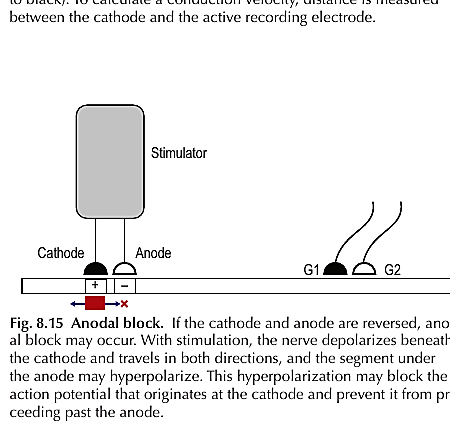

Katodal aktivasyonSABİTElektrot polaritesiTERS · SABİTGerçek iletim hızıSABİT
Anotta bloklanan lif%0
G1'e ulaşan volüTAM
Beklenen amplitüd38 µV
Geçen liflerin onseti2,5 ms · SABİT
Blok yok: Katot altında başlayan volü anot bölgesini geçer; liflerin tamamı G1'e ulaşır.

Kitap mekanizmasıDepolarizasyon katot altında başlar ve iki yöne yayılır. Anot altındaki hiperpolarize segment, geçen aksiyon potansiyelini teorik olarak bloke eder.
Klinik sınır: Rutin kısa-puls bipolar NCS'de anodal blok nadirdir; anodal/virtual-cathode eksitasyon da görülür. Düşük amplitüd tek başına anodal blok kanıtı değildir.